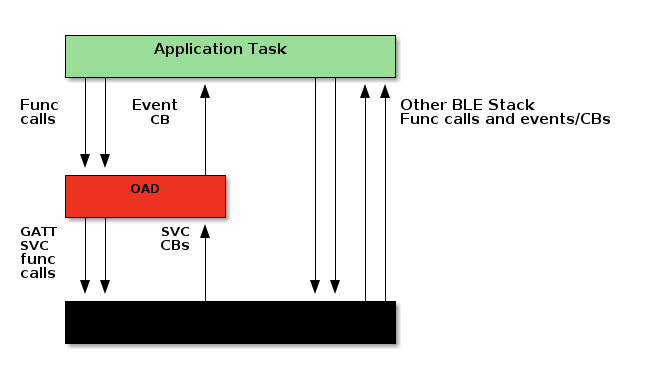

OAD Application¶
The application layer is responsible for plugging the OAD service. The OAD profile and communication with the BLE-Stack is encapsulated inside the OAD module. An application developer wishing to implement use the TI OAD solution will not need to worry about implementing the OAD state machine. The details of the OAD application layer are documented here for completeness and to aide in debugging.
OAD Software Architecture¶
The building blocks of the OAD software architecture are detailed below. In the figure below the following terms have been abbreviated for compactness in the image.

CB : Callback
SVC: BLE Service
Func: Function
Internally the OAD service is responsible for the following:
Implementing the OAD profile
Plugging the GATT read and write callback from the BLE5-Stack
Serializing and de-serializing structures from over the messages
Sending OAD related requests and responses to the BLE5-Stack to be sent over the air
Queuing up messages from stack callbacks to be processed later by the application
Implementing the OAD state machine, and ensuring proper state transitions
Implementing the OAD inactivity timers
Implementing getter/setter functions for the application to use and configure the OAD service
External to the OAD service the application task is responsible for the following. For more information, see the OAD Advanced lab of the SimpleLink Academy.
Plugging an OAD event handler
Calling the OAD event processing function in a task context when events are posted.
Resetting the device when the
OAD_DL_COMPLETEevent is received.
A message sequence chart is included below to show a sample of an application’s interaction with the OAD service.
![@startuml
hide footbox
participant app_task.c as app
participant oad.c as oad
participant "BLE Stack" as BLE
participant "OAD Queue" as OADQ
box "BLE-Stack Context"
participant "GATT R/W Callback" as GATT
end box
activate app
group Initialize OAD service
app -> oad : OAD_open()
activate oad
oad -> BLE : GATTServApp_InitCharCfg() (repeat for each char CCCD)
oad -> BLE : GATTServApp_RegisterService()
oad -> OADQ : Queue_construct()
deactivate oad
app -> oad : OAD_register()
end
BLE -> app : ATT_MTU_UPDATED_EVENT
app -> oad : OAD_setBlockSize()
group Processing OAD Service Messages
note over oad, BLE
Peer device sends OTA command/write
end note
activate GATT
GATT -> oad : oadWriteAttrCB()
activate oad
oad -> OADQ : oadEnqueueMsg()
oad -> app : Execute (*oadWriteCB_t)
deactivate OAD
deactivate GATT
app -> oad : OAD_processQueue()
oad -> OADQ : Queue_get()
note over oad
Process event
end note
end
group
@enduml](../_images/plantuml-d1fe9648891470f896adcdb6b9269d111aecd96f.png)
Figure 229. OAD service/ Application interaction¶
OAD State Machine¶
The OAD service implements an ‘OAD State Machine’ for performing the OAD. The following state machine depicts the OAD service state transitions and its interactions with the OAD communication profile messages for both on-chip and off-chip OAD.
Figure 230. OAD Types Overview¶
The states and state transitions are encapsulated inside the OAD service, but some of the critical states are described below to aide in understanding.
Note these sections refer to internal state handling and transitions local to the target device. For a summary of the over the air sequence see Sequence diagram for OAD process and for a breakdown of the different types of profile messages and how to interpret them over the air please see BLE-Stack OAD Profile.
Image Validation¶
After establishing a new connection, updating the connection interval for a faster OAD and enabling notifications of OAD Image Identify and OAD Image Block characteristics on the OAD target, the OAD distributor shall write to the Image Identify characteristic of the OAD target. The message data will be the header retrieved from the OAD Image available for OAD.
On receiving the Image Identify message, the OAD target will get ready for OAD process. The image validation is done by secure bootloader. That means, there is no image validation in the OAD application.
Image Block Transfers¶
Once the OAD target is ready for receiving image, it will switch to the configuration state. There it will get the block size and set image count. When the OAD distributor sends the Start OAD Command to the Control Characteristic (for more details see OAD Control Characteristic Supported Commands.), the OAD target will respond with a Control characteristic notification requesting the first block. The OAD distributor will then send the first block to the OAD target.
This process continues with the OAD target notifying the OAD distributor of the next block it needs and the OAD distributor sending the requested image block until all blocks have been transferred.
Completion of the OAD Process¶
After receiving the complete image, OAD application will transit to OAD_COMPLETE state and then trigger a reset. After reset the secure bootloader will start the new image validation.